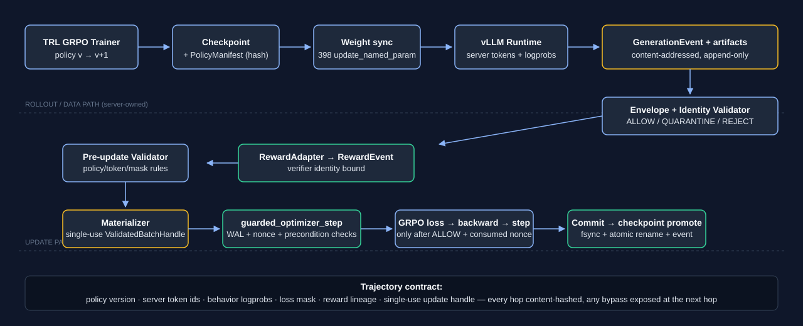
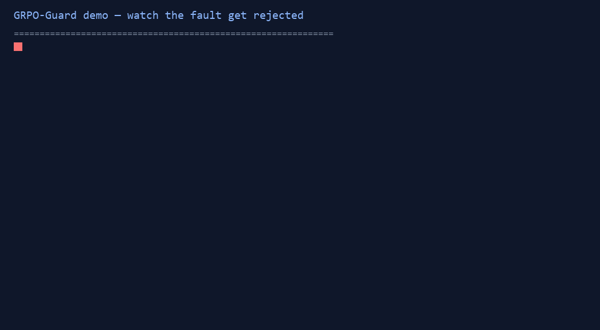

GRPO-Guard makes the online post-training loop machine-verifiable: it binds policy version, server token ids, behavior logprobs, loss masks, reward lineage and the optimizer update into a content-hashed evidence chain — and detects the silent wiring errors that loss/logging cannot (static rollout, misbound old-logprob, retokenization, mask shift).

| Capability | Status |
|---|---|
| Precondition failures before backward (non-ALLOW, tampered artifact, reward substitution, wrong group/model, nonce reuse) | implemented + tested — params provably unchanged |
| Crash-consistent update (WAL PREPARED→COMMITTED/ABORTED, atomic checkpoint promotion) | implemented + failpoint tests |
| In-memory rollback after a failed step | not claimed — crash recovery discards the worker, resumes from last committed checkpoint |
| Frozen held-out probe | 25% → 25% — the guard proves training-loop correctness, not capability gains (deliberate negative result) |
| Multi-node / NPU / malicious-producer resistance | out of scope — single-box 2-GPU prototype, dev-environment wiring errors |
uv sync --frozen # pydantic / numpy / pyyaml — no GPU needed uv run python examples/countdown/demo.py # happy path -> ALLOW; then F1–F4 injected faults -> reject with reason codes; # raw text input -> TypeError (no text fallback)
Demo shows the contract rejecting a fault whose loss would look normal: F2 misbound logprobs changes the loss by ~0 while the guard rejects on identity — the exact case numeric monitoring misses.

Read more: README · CHANGELOG · claim matrix · evidence audit
This framework came out of a real failure: an Agent-RL GRPO loop whose training curves looked healthy while the rollout service served an old policy. Success rates were batch noise of a static policy. The fix is not a better metric — it is making who produced which token for which policy version, and what the optimizer actually consumed a machine-verifiable contract. See the incident postmortem.